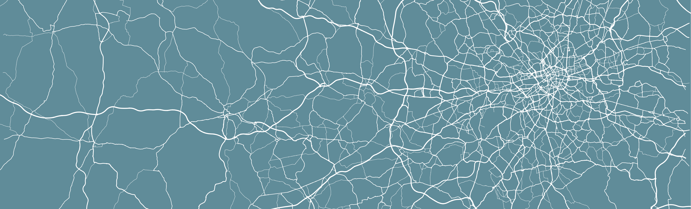

GEOG0030: Geocomputation
2021-11-02
0.1 Welcome

Welcome to Geocomputation, a course that introduces you to both the principles of spatial analysis and the use of programming for data analysis.
Over the next ten weeks, you’ll learn about the theory, methods and tools of spatial analysis whilst implementing small research projects, first using Q-GIS, and then using the R programming language within the R-Studio software environment. You’ll learn how to find, manage and clean spatial, demographic and socio-economic data sets, and then analyse them using core spatial and statistical analysis techniques.
0.2 Moodle
Moodle is the central point of your learning experience for GEOG0030 and contains everything you need to know about it. It’s where you’ll find links to all lecture content, reading materials, planned activities as well as key module and assessment information
0.3 Module overview
The topics covered over the next ten weeks are:
| Week | Date | Section | Topic | Online Session |
|---|---|---|---|---|
| 1 | 10/01/2022 | Foundational Concepts | Geocomputation: An Introduction | |
| 2 | 17/01/2022 | Foundational Concepts | GIScience and GIS software | |
| 3 | 24/01/2022 | Foundational Concepts | Cartography and Visualisation | |
| 4 | 31/01/2022 | Foundational Concepts | Programming for Statistical Analysis | |
| 5 | 07/02/2022 | Foundational Concepts | Programming for Spatial Analysis | |
| READING WEEK | 14/02/2022 | READING WEEK | - | - |
| 6 | 21/02/2022 | Core Spatial Analysis | Analysing Spatial Patterns I: Geometric Operations | |
| 7 | 28/02/2022 | Core Spatial Analysis | Analysing Spatial Patterns II: Spatial Autocorrelation | |
| 8 | 07/03/2022 | Core Spatial Analysis | Analysing Spatial Patterns III: Point Pattern Analysis | |
| 9 | 14/03/2022 | Advanced Spatial Analysis | Rasters, Zonal Statistics and Interpolation | |
| 10 | 21/03/2022 | Advanced Spatial Analysis | Geodemographics |
0.4 Troubleshooting
Spatial analysis can yield fascinating insights into geographical relationships. However, at times it can be difficult to work with - particularly when we combine this with learning how to program at the same time. You will get lots of error messages and have software crash, you’ll end up with bugs in your code that are difficult to find, and you may spend a whole day trying to track down a single data set. But the rewards of learning how to do all of this will become apparent.
If you need specific assistance with this course please:
Attend the weekly Geocomputation help sessions to ask questions directly to the PGTA.
Post in the respective r-help channels within the Geocomputation Team.
Ask a question at the end of a lecture or during the computer practical.
Check the Moodle assessment tab for queries relating to the assessment (more information will be provided at the end or reading week)
Attend the Department’s Coding Therapy sessions that are run on a weekly basis
Due to the size of the class we will only reply to tech and R help messages on Teams so all students can see the discussion. We’d also encourage you to monitor the tech-help or r-help channels and contribute to/answer questions as/if you can! Creating a small community across our course will help all of us in the long-run.
If after pursuing all these avenues you still need help, you can book into our office hours. These meetings are to discuss a geographical concept in relation to the material/assessment or for any personal matters relevant to the completion of the module.